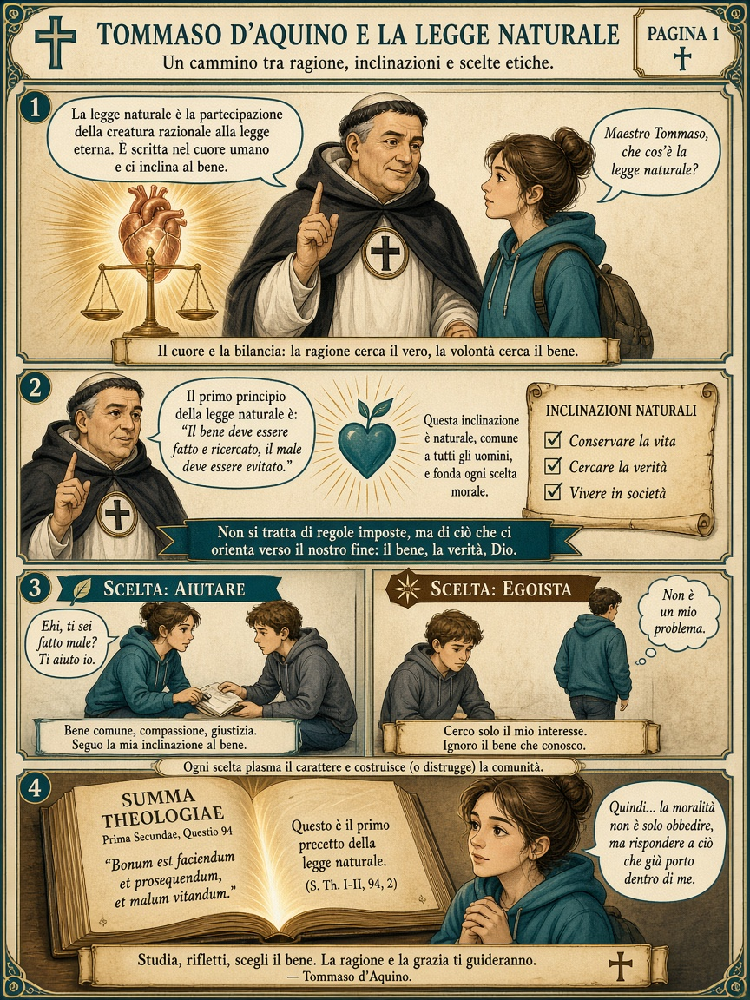

Ripasso · percorso
Cammino delle cinque vie
Sei tappe sul chiostro. A ogni fermata: domanda di ripasso. Non è arcade: serve per studiare.

Tappa 1/6
Punti 0

Ripasso · percorso
Sei tappe sul chiostro. A ogni fermata: domanda di ripasso. Non è arcade: serve per studiare.
